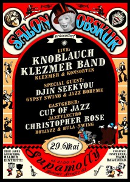
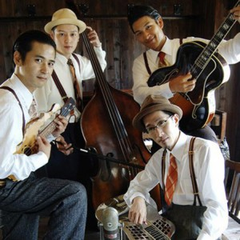

-
-
Berlin
Deutschland
Weltweit
Electro Swing
Blogroll
Veranstaltungen
- Keine Veranstaltungen
- alle Veranstaltungen
Schlagwörter
balboa balkan band beat berlin big band blog blues camp CD charleston dance DJ draussen electro electro swing Festival film Frankie Hamburg Herräng hip hop Jazz konzert kunst kurs lindy hop live mix Musik NSG Party podcast Radio remix sampler schweden show spaß Swing swingtanz Tanz tanzen Videos WorkshopArchive
- September 2019 (1)
- Juli 2018 (1)
- Januar 2018 (2)
- Mai 2017 (1)
- November 2016 (1)
- April 2016 (1)
- Mai 2015 (2)
- März 2015 (1)
- Januar 2015 (4)
- November 2014 (3)
- Oktober 2014 (2)
- Juni 2014 (1)
- Mai 2014 (1)
- April 2014 (1)
- März 2014 (1)
- Februar 2014 (1)
- Januar 2014 (5)
- Oktober 2013 (2)
- September 2013 (3)
- August 2013 (3)
- Juli 2013 (4)
- Juni 2013 (8)
- Mai 2013 (8)
- April 2013 (5)
- März 2013 (7)
- Februar 2013 (4)
- Januar 2013 (4)
- Dezember 2012 (2)
- November 2012 (2)
- Oktober 2012 (5)
- September 2012 (4)
- August 2012 (5)
- Juli 2012 (7)
- Juni 2012 (6)
- Mai 2012 (12)
- April 2012 (7)
- März 2012 (11)
- Februar 2012 (7)
- Januar 2012 (20)
- Dezember 2011 (8)
- November 2011 (17)
- Oktober 2011 (11)
- September 2011 (13)
- August 2011 (18)
- Juli 2011 (8)
- Juni 2011 (16)
- Mai 2011 (24)
- April 2011 (15)
- März 2011 (20)
- Februar 2011 (9)
- Januar 2011 (7)
- Dezember 2010 (13)
- November 2010 (17)
- Oktober 2010 (21)
- September 2010 (9)
- August 2010 (10)
- Juli 2010 (5)
- Juni 2010 (10)
- Mai 2010 (2)
- April 2010 (16)
- März 2010 (11)
- Februar 2010 (11)
- Januar 2010 (12)
- Dezember 2009 (13)
- November 2009 (12)
- Oktober 2009 (9)
- September 2009 (18)
- August 2009 (12)
- Juli 2009 (8)
- Juni 2009 (13)
- Mai 2009 (22)
- April 2009 (15)
- März 2009 (25)
- Februar 2009 (16)
- Januar 2009 (20)
jazzroots performance von JOYSS
Einer meiner Lieblingstänzer JOYSS hat eine tolle Performance hingelegt. Alles voller jazz moves, aber weit und breit keine Swingmusik. Mich stört das nicht.
Jammin‘ the Blues 1944
Leute schaut Euch diesen schönen Kurzfilm von 1944 an. Da geben einige begnadete Blues-Swing-Jazz Musiker ein „Stelldichein“: Lester Young, Red Callender, Harry Edison, Marlowe Morris, Sid Catlett, Barney Kessel, Jo Jones, John Simmons, Illinois Jacquet, Marie Bryant, Archie Savage und Garland Finney. Ein alter Hut, ist also noch lange kein alter Hut.
Posted in Videos Getaggt blues, kurzfilm, Lester Young, Marie Bryant, Sid Catlett, Swing Kommentare geschlossen
Hamburg: Spontanes Draußentanzen im Jenischpark, ab 15:oo

Endlich: Sonne und um die 20°C. Wir treffen uns um 15:oo im Jenischpark zum Draußentanzen. Die Swingschleuder steht bereit, ein Kuchen auf dem Backblech. Spontanes Tanzen mit Elbblick. Kinder haben gut Auslauf, Tänzer jede Menge Platz. Kommt zahlreich!
Karte zum Jenischpark
Abgesagt: Ostermontag: Auferstehungshop
Leider müssen wir unser Draußentanzen am 17.4.2017 absagen. Die Wetterlage mit Sturmböen und 97% Regenwahrscheinlichkeit sowie maximal 9°C lassen kein Tanzen im Freien und schon gar kein gemütliches Picknick zu.
Aber aufgeschoben ist nicht aufgehoben. Das holen wir nach! Wir geben hier Bescheid, sobald sich an einem der kommenden Wochenenden die Wetterlage bessert.
Swing, Tanz und Picknick mit Elbblick … wird dieses mal leider nix.
Kommt am Montag, 17.4.2017 zahlreich zum „Auferstehungshop“ in den Jenischpark. Die alt-ehrwürdige Swingschleuder ist wieder am Start. Bringt gerne Leckerlis fürs Picknick mit.
Wir treffen uns ab 14 Uhr am Jenischhaus.
Date/Time
Date(s) - 17. 04. 2017
14:00 - 18:00
Posted in Kommentare geschlossen
Paartanz auf schwedisch: Swingband Cats & Dinosaurs
Wenn auch etwas spät, hier ein schöner Artikel von Andreas Michalke zur schwedischen Swingband Cats & Dinosaurs:
http://jungle-world.com/artikel/2016/25/54303.html
Die Band: http://www.catsanddinosaurs.com/
Posted in Musik Kommentare geschlossen
James Hunter Six „Hold On“
[soundcloud url=“https://api.soundcloud.com/tracks/225947438″ params=“auto_play=false&hide_related=false&show_comments=true&show_user=true&show_reposts=false&visual=true“ width=“100%“ height=“450″ iframe=“true“ /]
Einige Zeit ist schon seit meinem letzten Post ins Land gegangen. Aber das neue Album „Hold On“ von James Hunter hat mich jetzt endgültig aus dem Winterschlaf geweckt. Herr Hunter kommt zwar nicht unbedingt aus der Swing-Ecke. Allerdings finden sich zwei super swingende Songs („light in my life“, „in the dark“) und auch Material für die nächste Blues Party. Die ersten Takte von „in the dark“ haben mich spontan an Count Basies „easy does it“ erinnert. Die Platte ist toll! Tolles Songwriting, tolle Bläser Arrangements, toller Kratzbürsten-Gesang und Soul-Gitarrenspiel. Mein Album für das Jahr 2016.
HH Tanzbrötchen aufs Parkett

Sonntagsfrühstück mit Swingband
TANZBRÖTCHEN Nr. 8 mit „Wir – verlegen – 50qm – Tanzboden – auf – dem – Hein – Köllisch – Platz – SPECIAL“
Buffet bis 13:00 Uhr im Kölibri, Hein Köllisch Platz 12
Tanzfläche und Band auf dem Hein Köllisch Platz, St. Pauli
- Live Jazz Band draußen: Tanzbrötchen Allstars + special guest Norbert Susemihl
- Gratis Swingtanzkurs mit den Hamburger Tanzlehrern von „Bloody Hot Swing“ um ca. 12:30 Uhr
- 50 qm Tanzboden
- Amtliche DJs6,00 EUR Frühstücksbuffet
Spende für die Band
Ende ca. 17 Uhr
thekillintrills & GWA St. Pauli
www.thekillintrills.de/tanzbroetchen
www.susemihl-all-stars.eu
bloodyhotswing.com
www.gwa-stpauli.de
Date/Time
Date(s) - 05. 07. 2015
11:00 - 17:00
Location
Kölibri
Posted in Kommentare geschlossen
Berlin: SALON OBSKUR im Supamolly – mit der Knoblauch Klezmer Band

Heute(!) ists wieder soweit: SALON OBSKUR im Supamolly! Zu Gast die Knoblauch Klezmer Band.
Auf seiner Reise durch Berlin begrüßt euch der Salon Obskur im Mai im legendären Supamolly! Eingepackt haben wir für euch die feuerscharfen Virtuosen der Knoblauch Klezmer Band und als eure Reisebegleiter sind Madame DJin SeekYou und die Salonlöwen Christopher Rose + Cup of Jazz am Start.
Live: Knoblauch Klezmer Band (Jazz vs Klezmer + Swing)
Special Guest: DJin SeekYou (GypsySwing & JazzBohéme)
Salon-Residents:
Christopher Rose (Hot Jazz, Hula Swing)
Cup of Jazz (Jazzylectro)
Charme-Inspektor: Mama Baijuntak
29. Mai 2015 *** Einlass: 21:30 Uhr
www.salon-obskur.com & https://soundcloud.com/salon-obskur
Date/Time
Date(s) - 29. 05. 2015
22:00
Location
Supamolly
Posted in Kommentare geschlossen
Zum 100. GEBURTSTAG – Das Leben der Billie Holiday

Ein schönes Fundstück von Gwen:
Dieses Jahr wird Billie Holiday wahrscheinlich noch des öfteren erinnert, gespielt, weil die wäre 100, is‘ aber nur 40 geworden. Ein ganz gute hörbares Feature über ihr Leben en detail und generell:
http://www.deutschlandfunk.de/100-geburtstag-lady-day-das-leben-der-billie-holiday.1247.de.html?dram:article_id=312535
HH: SWINGY’S HAPPY BBQ-TIKI-PARTY
Liebe Leute, am 19. Mai gehts auf zu Swingys HAPPY BBQ TIKI Party
** Swing Tiki-Hawaii Sound der 30er bis 50er Jahre **

The Sweet Hollywaiians
Mit live Musik von den SWEET HOLLYWAIIANS aus Japan(!) und den HAWAIIAN TOASTIES aus der Hansestadt. Zwischen den Plattenkisten heizt SWINGY THE KID Euch ordentlich ein! Vorweg gibts einen Tanzkurs und BBQ. Ein kleiner Vorgeschmack auf die Bands:
Fitzefatzebook-Link zur Veranstaltung:
https://www.facebook.com/events/1577467119178951/
via Swingy The Kid
Date/Time
Date(s) - 19. 05. 2015
20:00
Location
MANDALAY
Posted in Kommentare geschlossen
Jazzgeschichten: Berlin Jazz Stadttouren
Ui schön, Anja Gallenkamp bietet eine Jazz Stadttouren in Berlin an: „Jazz steht im Mittelpunkt – und mit ihm seine Protagonisten“
Nächste Tour am Mittwoch: Die Moderne Jazz-Tour: „Immer den ´heißen Tönen` nach!“ – Jazz-Geschichten aus dem Berlin der Weimarer Republik
~ € 5-11, auf deutsch
http://www.jazzgeschichten.de
Hamburg: die Trills im Museum für Arbeit
Leute, schnell die Tanzschuhe eingepakt und auf, auf nach Barmbek ins Museum für Arbeit zur:

Killin Trills im Museum für Arbeit
Programm 18:00 bis 01.30 Uhr, Band 20:00 bis 22:00 Uhr
Konzert im Museumshof
Eintritt frei
Am Samstag, den 18. April ist es wieder soweit: Die Lange Nacht der Museen findet zum 15. Mal statt.
Im Museum der Arbeit heißt es in diesem Jahr: „Choo Choo Bidoo“ und der Hof wird zur Swing-Bühne: Von 18.00 bis 1.30 Uhr gibt der Offbeat den Ton an, wenn das Trio „The Killin´ Trills” spielt und DJ „Mosquito Hopkins“ schwarzes Gold für die Ohren auflegt. Tanzen nicht verboten!
Musikalische Zeitreise in der Langen Nacht der Museen: Im Museum der Arbeit lebt die Swing-Ära der 1920er und 1930er Jahre wieder auf. Auf dem Hof spielt das Hamburger Jazz-Trio „The Killin´ Trills“ zwei Konzert-Sets um 20.00 bis 20.45 Uhr und um 21.15 bis 22.00 Uhr. DJ „Mosquito Hopkins“ sorgt ab 18.00 Uhr für Schellacksound und legt schwarzes Gold für die Ohren auf. Neben dem Musikprogramm gibt es Oldtimer der Vorkriegsklasse zu bestaunen, Vorträge zur Geschichte des Swing und viele weitere Vorführungen und Workshops in den Bereichen Buchdruck, Lithografie, Metall- und Holzverarbeitung. Selbstverständlich ist auch für kulinarische Leckerbissen gesorgt.
Der Besuch des Museumshofes und des Konzertes ist kostenlos. Die Eintrittskarten für die Lange Nacht der Museen kosten 15 € / 10 € erm. Die Fahrten mit den Shuttlebussen, den Verkehrsmitteln des HVV und dem Alsterdampfer (Anleger direkt am Museum) sind inklusive. Die Eintrittskarte berechtigt den Zutritt zu allen an der Langen Nacht beteiligten Museen auch noch am Sonntag.
Date/Time
Date(s) - 18. 04. 2015
20:00 - 22:00
Location
MUSEUM DER ARBEIT
Posted in Kommentare geschlossen